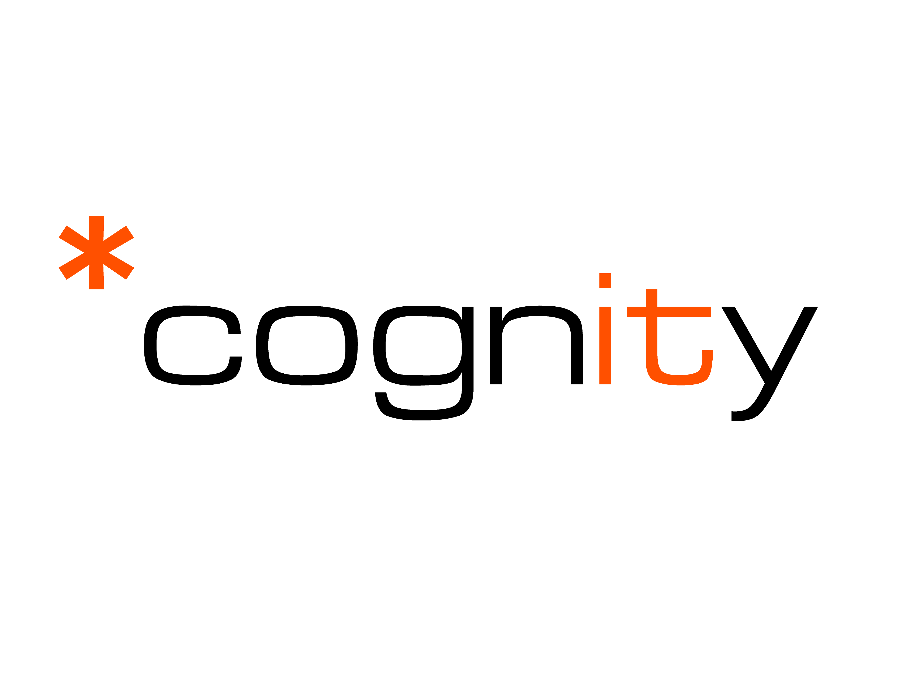

Computer Engineer
Cognity S.A.
Computer engineering at Cognity S.A., contributing to product development and delivery across frontend and backend systems. (update soon)
Computer Scientist & Engineer
I design and build full-stack SaaS solutions, from frontend interfaces to backend services and database logic, with emphasis on performance, maintainability, and clean architecture. Based in Athens, Greece.
> Progress creates direction...
I'm a Computer Scientist & Engineer with an Integrated Master's degree in Computer Science & Engineering from the University of Ioannina.
I have worked across research and product environments, from smart energy optimization projects to production SaaS platforms, contributing to frontend features, backend services, and database workflows.
I enjoy solving complex technical problems with practical solutions, and outside of work I spend my time playing guitar and watching cinema.
Computer engineering at Cognity S.A., contributing to product development and delivery across frontend and backend systems. (update soon)

Contributing to Kyvera Solutions, a compliance SaaS platform managing organization/entity structures and secure data rooms. Built Next.js frontend features for entity management and compliance workflows, and developed Python backend services integrating international registry APIs for KYC/KYB.

Delivered full-stack product features for BIP! Finder, optimized filtering logic and database queries, and refactored legacy components for maintainability.

Worked on smart-building project for energy optimization using machine learning techniques, including software for managing EV charging station data and cost optimization.

ABSTRACT
Modern researchers engage in diverse activities, assume multiple contribution roles, and produce a variety of outputs beyond traditional publications. This broader view of research contributions is increasingly recognised by responsible research assessment initiatives. However, existing researcher profiling platforms remain largely focused on publications and publication-centric indicators, offering limited support for contextualised and multi-dimensional representations of research careers. This paper presents BIP! Scholar, a platform that supports flexible researcher profiling through a template-driven approach. Researchers can create profiles tailored to different presentation or assessment contexts using track-based, narrative-style, or hybrid templates which support the representation of diverse outputs, contribution roles, and broader research activities. The platform also supports research assessment experts who wish to design and evaluate experimental profile templates.
Aug 2025
ABSTRACT
The growing volume of scientific literature makes it challenging for scientists to move from a list of papers to a synthesized understanding of a topic. Because of the constant influx of new papers on a daily basis, even if a scientist identifies a promising set of papers, they still face the tedious task of individually reading through dozens of titles and abstracts to make sense of occasionally conflicting findings. To address this critical bottleneck in the research workflow, we introduce a summarization feature to BIP! Finder, a scholarly search engine that ranks literature based on distinct impact aspects like popularity and influence. Our approach enables users to generate two types of summaries from top-ranked search results: a concise summary for an instantaneous at-a-glance comprehension and a more comprehensive literature review-style summary for greater, better-organized comprehension. This ability dynamically leverages BIP! Finder's already existing impact-based ranking and filtering features to generate context-sensitive, synthesized narratives that can significantly accelerate literature discovery and comprehension.
An Ansible playbook for provisioning a complete Windows 10/11 development environment, including PowerShell profile setup, environment variables, PATH management, WinGet package installation, and optional development workspace/bootstrap tasks via tags.
A computer vision desktop app that controls Windows master volume by measuring thumb-index fingertip distance in real time via webcam input, with configurable calibration and smoothing for stable gesture response.
A Java-based lyrics search engine developed for the Information Retrieval course, using Lucene Core for indexing and advanced search (phrase, fuzzy, wildcard), with pagination, highlighting, and recommendations based on search history.
Frontend
Backend
Data
DevOps
Tools
Machine learning methods using R.
Thesis: Resource Allocation Mechanisms in Distributed Edge Cloud Infrastructures

Participated in Mathematics Club.
Represented Athens College at CERN.

Open to discussing roles, collaborations, and impactful engineering opportunities.
contact@dionisisdiamantis.com